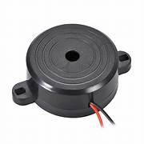

NodeMCU, based on the ESP8266 WiFi module, is a pivotal IoT development platform. It simplifies projects with Lua scripting, offering accessible wireless connectivity. Equipped with GPIO pins, it interfaces with various devices, making it suitable for diverse applications, from home automation to data logging. NodeMCU's vibrant community enhances its appeal, providing valuable resources for both novices and experienced developers. This versatile and cost-effective platform is an excellent choice for anyone seeking to create IoT solutions, fostering innovation in the ever-evolving field of connected devices.

A buzzer is a simple yet effective audio signaling device commonly used in electronics and everyday applications. It consists of an electromechanical or piezoelectric component that generates sound when an electrical current passes through it.
An eye blink sensor is a specialized device that detects and monitors eye blinks using optical or infrared technology. It finds applications in human-computer interaction, allowing users to control devices with eye movements, and in medical diagnostics, aiding in conditions like sleep disorders. Eye blink sensors are also used in safety systems to prevent accidents caused by drowsiness, and in gaming and accessibility technology. Privacy considerations are essential when utilizing these sensors, given their capture of personal biometric data.
A gear motor is a mechanical device that combines an electric motor with a gearbox to achieve controlled motion and increased torque output.